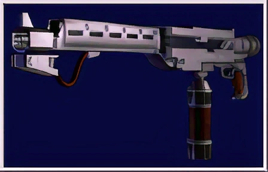
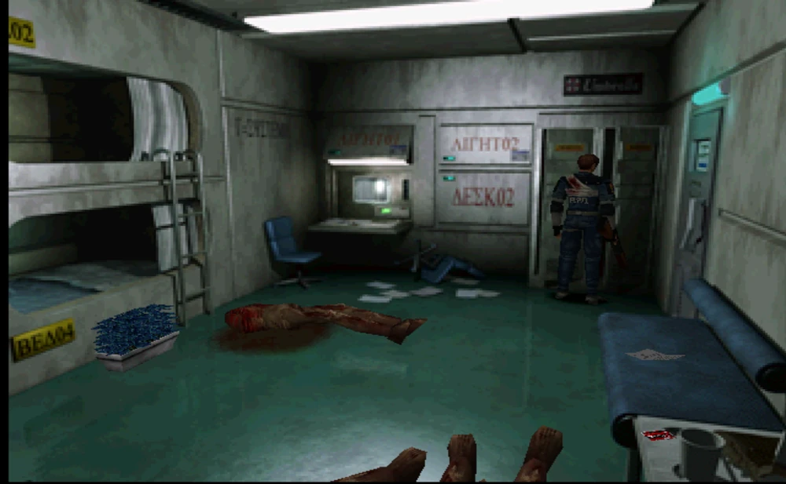

|
 |
|
| Información general | |
|---|---|
| Poder de fuego | Potente |
| Velocidad de fuego | Rápida |
| Clase de arma | Artillería pesada |
| Valor | Ninguno |
| Fuente: Resident Evil Wiki | |
Descripción
El Lanzallamas es un arma que aparece en Resident Evil 2.
Características
Este lanzallamas se encuentra únicamente con Leon S. Kennedy. Es un arma bastante fuerte, aunque su reserva de combustible se agota rápidamente. Su munición se representa con un porcentaje al 100% en el momento cuando se recoge y que se va agotando gradualmente a medida que se usa hasta llegar a 0% cuando se vacíe, y no existe más munición de recambio en caso de agotarla.
Esta arma es bastante efectiva contra ciertos enemigos, especialmente las plantas Ivy, las cuales mueren rápidamente con las llamas, también es efectiva para eliminar a las larvas y a la polilla gigante. Los zombis también son débiles ante esta arma y mueren rápidamente por las llamas. Leon, alternativamente puede usar esta arma para quemar la planta de tentáculos que bloquea el conducto de aire en los dormitorios del laboratorio, en lugar de usar el encendedor.
Localizaciones
Se encuentra dentro de una taquilla en los dormitorios del área oeste en el laboratorio subterráneo de Umbrella.

Curiosidades
- Originalmente se iba a incluir combustible de lanzallamas para recargar esta arma, aunque esto fue descartado en la versión final. En los archivos del juego de la beta 1.5 se pueden encontrar texturas y datos de dicha munición.
- En Resident Evil 2 (remake), esta arma fue reemplazada por el lanzallamas químico, la cual sí se puede recargar con combustible.